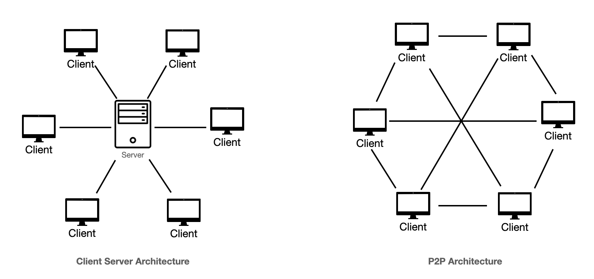
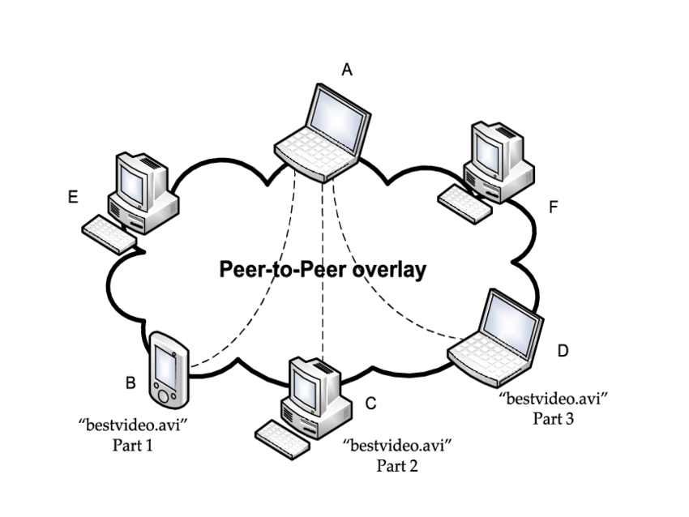
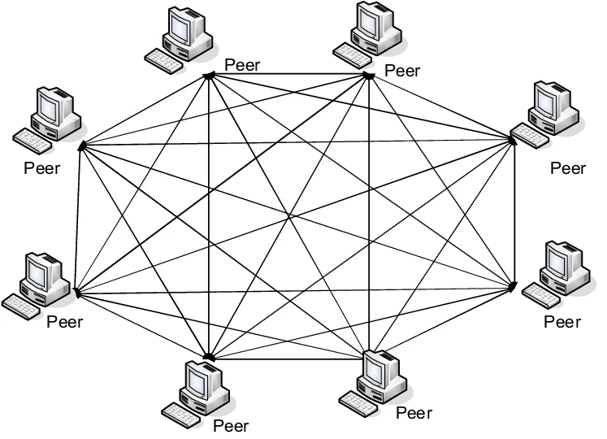
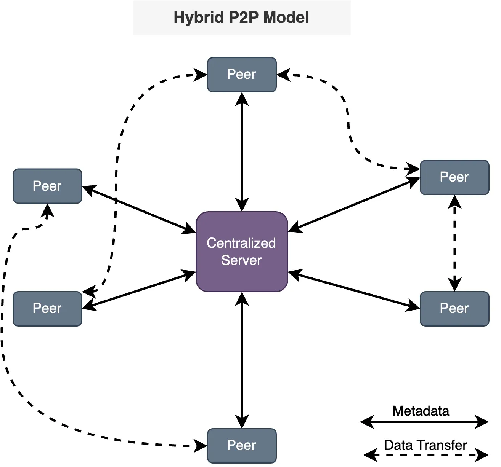
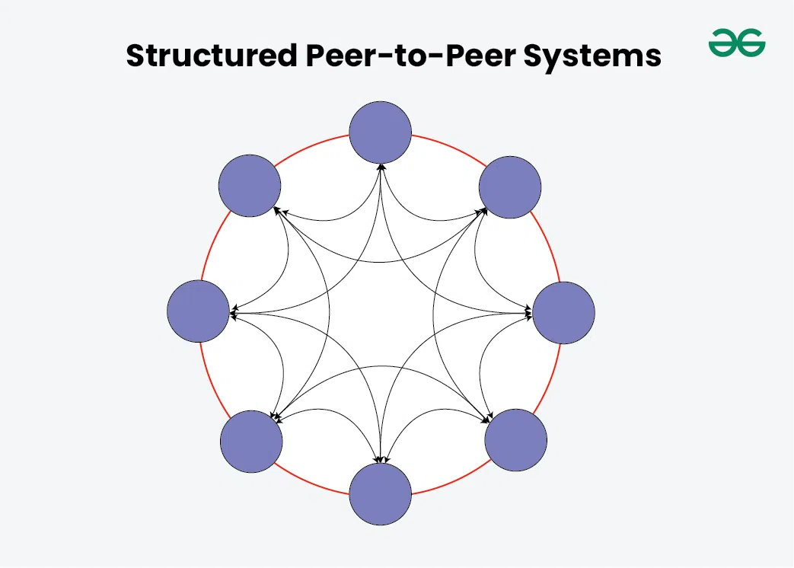
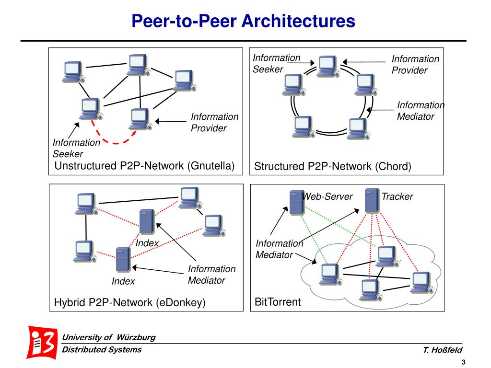

System Design Mastery
Master scalable systems with premium insights
🔗 Peer-to-Peer (P2P) Architecture
📌 What is Peer-to-Peer Architecture?
Peer-to-Peer (P2P) Architecture is a distributed system where each node (peer) acts as both a client and a server.
Unlike the client-server model, there is no central server controlling the system.
Every peer can request resources and also provide resources.
Each computer can send and receive data directly from other peers.

⚙️ Key Characteristics
1️⃣ No Central Server
All nodes communicate directly with each other.
2️⃣ Each Node is Both Client and Server
A peer can:
- Download data (client)
- Upload data (server)
Example:
Peer
A downloads file from Peer B
Peer A uploads file to Peer C
3️⃣ Distributed Network
Resources are spread across many nodes instead of a central server.
This improves:
- fault tolerance
- scalability
🔄 How Peer-to-Peer Architecture Works
Example: File sharing system
A user wants to download a file.
The system finds peers that already have that file.
The user downloads pieces of the file from multiple peers.
While downloading, the user also uploads parts to others.

Flow:
Peer A requests file
↓
Network finds peers
↓
Peer B, C, D send file chunks
↓
Peer A downloads chunks simultaneously
🌍 Real-World Examples
📂 BitTorrent
Used for large file sharing.
Peers share pieces of files with each other.
Example files:
- Linux ISO downloads
- Large datasets
✅ Advantages
1️⃣ Highly
Scalable
More users → more resources.
Example:
More
peers sharing →
faster
downloads.
2️⃣ No Single Point of Failure
If one node fails,
others still
work.
3️⃣ Efficient Resource Sharing
Storage and bandwidth are
shared across
peers.
4️⃣ Cost Effective
No need for large centralized servers.
⚠️ Disadvantages
1️⃣
Security
Issues
Harder to control malicious peers.
2️⃣ Data
Consistency
Different peers
may have different data versions.
3️⃣ Network Management
Difficulty
Hard to
monitor and control decentralized systems.
4️⃣ Performance
Variability
Performance
depends on peer availability.
⚔️ Client-Server vs Peer-to-Peer
| Feature | Client-Server | Peer-to-Peer |
|---|---|---|
| Central Server | Yes | No |
| Communication | Client → Server | Peer ↔ Peer |
| Scalability | Limited | Very High |
| Fault Tolerance | Low | High |
| Example | Websites | BitTorrent |
🔗 5 Types of P2P Architectures
1️⃣ Pure Peer-to-Peer (Pure P2P)
In pure P2P, there is no central server and no special nodes.
Every node has equal responsibilities.
Each peer can:
- Request resources
- Provide resources

Characteristics :
- Fully decentralized
- All nodes are equal
- No central coordination
Example :
- Early Gnutella network
- Blockchain networks (similar concept)
Pros
✔ No single point of failure
✔ Highly decentralized
Cons
❌ Hard to search for resources
❌ Network traffic can
increase
2️⃣ Centralized P2P
In this model, a central server helps locate peers, but actual file transfer happens directly between peers.
The server only maintains an index of files and peers.
How it Works
- Peer asks central server for file location
- Server returns peer list
- Peer downloads directly from other peers
Example
Napster (early music sharing system)
Pros
✔ Faster resource discovery
✔ Easier management
Cons
❌ Central server becomes single point of failure
3️⃣ Hybrid P2P
Hybrid P2P combines client-server architecture and peer-to-peer.
Some nodes act as central coordinators, while peers still exchange data directly.

Example
- Modern Skype architecture
- Some gaming networks
Pros
✔ Faster peer discovery
✔ Better performance than
pure P2P
Cons
❌ Partial dependency on server
4️⃣ Structured P2P
Structured P2P networks organize peers using a structured algorithm like Distributed Hash Tables (DHT).
This helps locate resources efficiently and quickly.
Architecture :
Nodes follow a defined topology such as:
Ring Network

Each peer stores part of the distributed index.
Example Systems
- Chord
- Kademlia
- BitTorrent DHT
Pros
✔ Efficient resource discovery
✔ Predictable search
time
Cons
❌ Complex to maintain network structure
5️⃣ Unstructured P2P
In this network, peers join randomly without structured organization.
When searching for data, the system uses flooding or broadcasting queries.

Search process:
Peer asks neighbors → neighbors ask others
Example
- Gnutella
- Early file sharing systems
Pros
✔ Easy to implement
✔ Flexible network
Cons
❌ Search is inefficient
❌ High network traffic
🎯 Summary
Peer-to-Peer
architecture is a distributed system where each node acts as both a
client and a
server.
Nodes communicate directly with each other without a
centralized server.
It is
commonly used in systems like BitTorrent, blockchain networks, and distributed
storage
platforms.
Check out this link for differences between all architectures